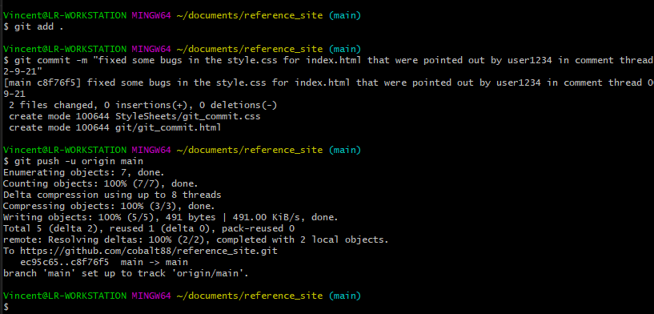
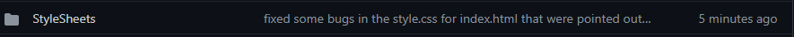
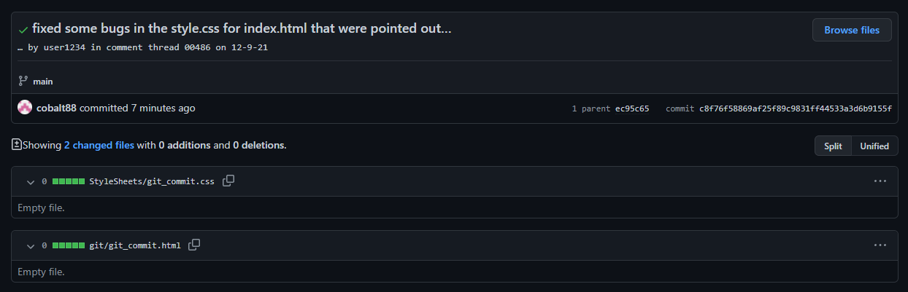

The git commit command will not execute without a -m or message value. And this is a good thing, you dont want people (yourself included) to be pushing changes to your repository wihtout any explanation as to what they did or why or when. So lets look at what happens when you do a git commit -m "your messge here".
In this example we are going to assume you are working inside an existing project and have made a few changes to the style.css sheet for your index.html
lets say the exact message you want to add to the commit is git commit -m ""fixed some bugs in the style.css for index.html that were pointed out by user1234 in comment thread 00486 on 12-9-21"

Thats an adequate description of what changes were made and why, if you wanted more detail it tells you where to find it without being overly verbose. However, once pushed to the remote repository you get something that looks like this:

Notice how that message that was added to the git commit looks a lot longer when when its displayed here? its so long it cant even load the whole messge.
Now lets take a look at how it looks when we open the stylesheet folder on github and look at the most recent changes.
